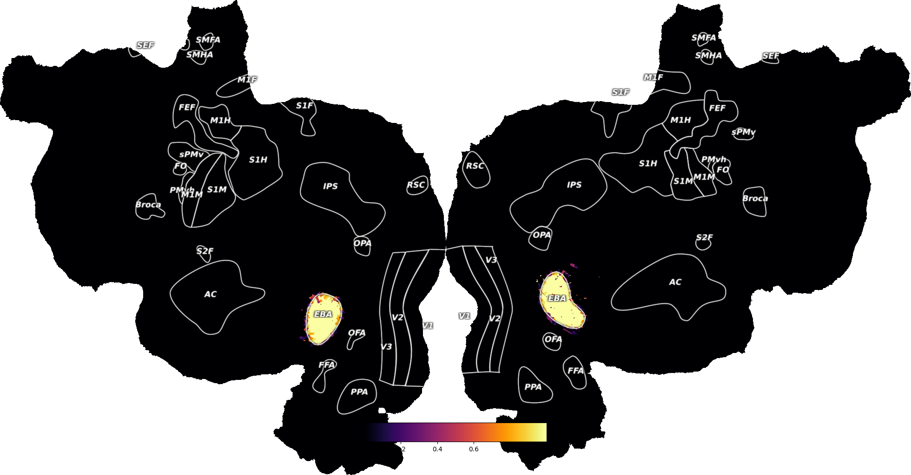

Note
Click here to download the full example code
Get ROI Voxel Mask¶
Get proportion of each voxel that exists within a named ROI (this constitutes a probability map for the ROI, with values ranging from 0-1). Plot this probablistic roi mask onto a flatmap.
In order for this to work, the specified ROI must exist in the overlays.svg file in the pycortex filestore for this subject.
Out:
Found 100.00% of EBA
Cutting 0 overlapping voxels (should be < ~50)
Generating a flatmap cache
import cortex
import matplotlib.pyplot as plt
subject = "S1"
xfm = "fullhead"
roi = "EBA"
# Get the map of which voxels are inside of our ROI
roi_masks = cortex.utils.get_roi_masks(subject, xfm,
roi_list=[roi],
gm_sampler='cortical-conservative', # Select only voxels mostly within cortex
split_lr=False, # No separate left/right ROIs
threshold=None, # Leave roi mask values as probabilites / fractions
return_dict=True
)
# Plot the mask for one ROI onto a flatmap
roi_data = cortex.Volume(roi_masks[roi], subject, xfm,
vmin=0, # This is a probability mask, so only
vmax=1, # so scale btw zero and one
cmap="inferno", # For pretty
)
cortex.quickflat.make_figure(roi_data,
thick=1, # select a single depth (btw white matter & pia)
sampler='nearest', # no interpolation
with_curvature=True,
with_colorbar=True,
)
plt.show()
Total running time of the script: ( 0 minutes 10.043 seconds)